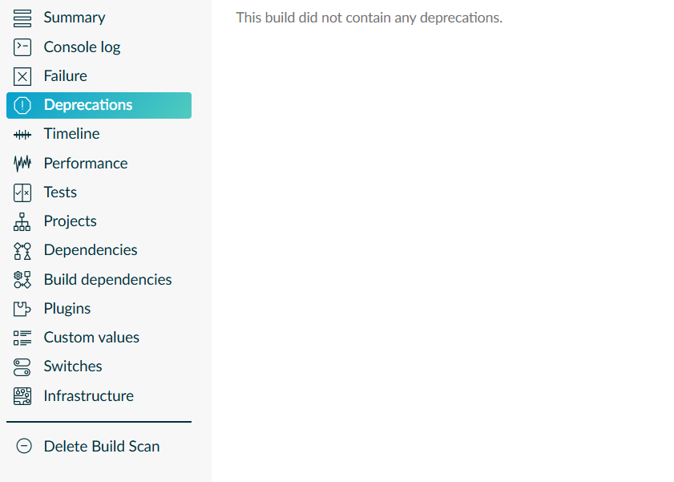

I am reading book on microservices patterns and checked out project from https://github.com/microservices-patterns/ftgo-application to go through the code sample. However the project was using gradle 6.9.1 version, which only supported upto jdk 15. However as jdk 21 is my favorite now, it means I have to walk the path of masters before me, who have travelled same path and dealt with going from gradle 6 to 7 and then to 8. Why? Because jdk 21 need at least 8.5. I have to downgrade my jdk version to 15 first. 😞
The gradle doc suggest you to run "gradle help --scan" command to check all depreciations and fix them before upgrading gradle wrapper. This ensure you do not conflate package upgrade error with application build error.
Any way after running "$ gradle help --scan" multiple time, I ended up, what people called build scan url, printed at the console.
First time I entered build scan url, I have to provide my email (nice one gradle, you got my email for free) and then I was able to see the build scan summary. But, I have to click on "Depreciations" to actually see, what could cause me trouble in future.
Well I got some decent depreciation warning which were bound to fail in gradle 7.0, such as gradle guys renamed their own tasks/config to something else and I need to use new task/config name, to get rid of this warning. such as replace "compile" with "implementation" and "testCompile" with "testImplementation" etc. There was also some warning as "force" flag has been removed from dependency version and you need to use "strict" so I did. I mean what other option do I have. Use mvn clean ?
Any way build scan will look like below, so you will be able to fix most of warning by yourself. Then finally you can run ".\gradlew wrapper --gradle-version 7.0" command to upgrade to gradle 7.0. Which I did and which I think work because I can see 'BUILD SUCCESSFUL' message on console.
Next, I excuted ".\gradlew --help" command, which confirmed that upgrade to gradle version 7.0 was successful, because it started downloading "gradle-7.0-bin.zip" and finally I got message "Welcome to Gradle 7.0!" followed by long help message.
So on to next task of building project with gradle 7.0 and continue upgrading till I reach, gradle 8.5. So long jdk 21.
I think I am going to stick to maven for all my future project.That is how my build scan looked like.
And that is how after getting rid of all warnings.

I was hit with error by gradle 7: "Configuration with name 'compile' not found."
And the solution was to upgrade "protobuf-gradle-plugin" plugin to 0.8.12 version, before I presented with next error.
The next error was : Could not get unknown property 'runtime' for configuration container of type org.gradle.api.internal.artifacts.configurations.DefaultConfigurationContainer. And I have to change configurations.runtime to configurations.runtimeClass.